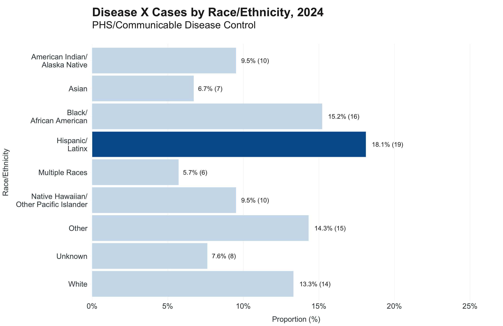
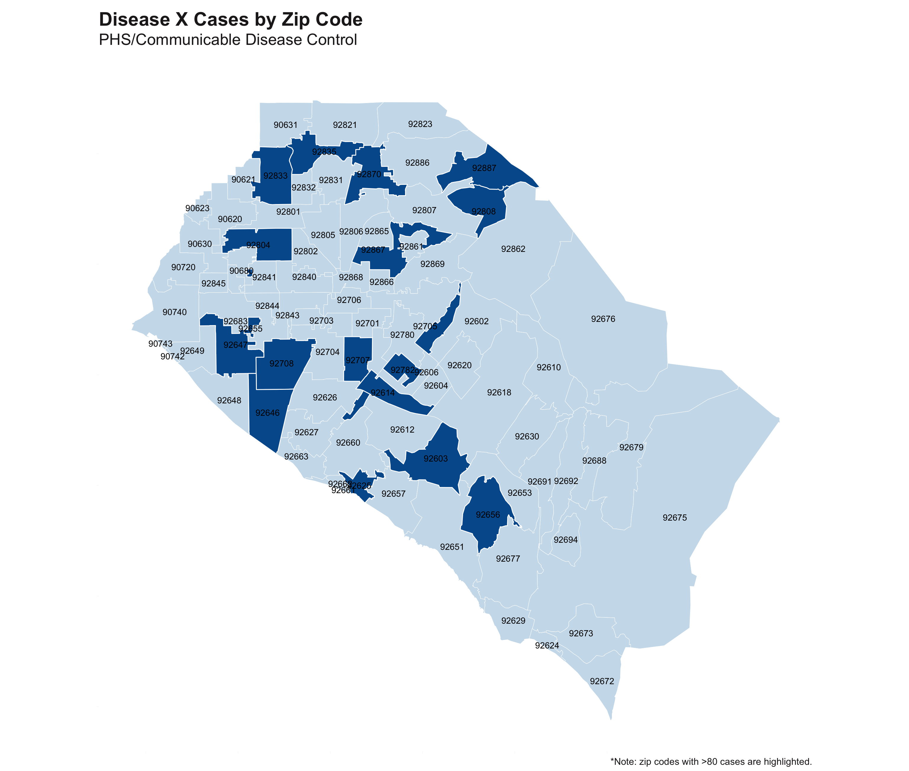

cases <- udf %>%
filter(RStatus %in% c("Confirmed","Probable","Suspect")) %>%
left_join(pos_lab, by = "IncidentID") %>%
mutate(
across(c("DtEpisode","DtOnset","DtLabCollect"), ~ as.Date(., "%m/%d/%Y")),
AgeGroup = case_when(
Age %in% 0:15 ~ "0-15",
Age %in% 16:24 ~ "16-24",
Age %in% 25:34 ~ "25-34",
Age %in% 35:44 ~ "35-44",
Age %in% 45:54 ~ "45-54",
Age %in% 55:64 ~ "55-64",
Age > 64 ~ "65+"
),
Gender = case_when(
Gender == "M" ~ "Male",
Gender == "F" ~ "Female",
Gender == "TF" ~ "Transgender woman",
Gender == "TM" ~ "Transgender man",
Gender %in% c("U","D") ~ "Missing/Unknown",
Gender == "I" ~ "Identity Not Listed",
Gender == "G" ~ "Genderqueer/Non-binary",
is.na(Gender) ~ "Missing/Unknown"
),
CTCIAdtlDemOrient = case_when(
CTCIAdtlDemOrient == "BIS" ~ "Bisexual",
CTCIAdtlDemOrient %in% c("DNK","UNK","NOT","DEC") ~ "Unknown",
CTCIAdtlDemOrient == "HET" ~ "Heterosexual or straight",
CTCIAdtlDemOrient == "HOM" ~ "Gay, lesbian, or same gender-loving",
is.na(CTCIAdtlDemOrient) ~ "Unknown",
TRUE ~ CTCIAdtlDemOrient),
RaceEthnicity = ifelse(Ethnicity == "Hispanic or Latino", Ethnicity, Race),
RaceEthnicity = case_when(
RaceEthnicity == "Hispanic or Latino" ~ "Hispanic/Latinx",
RaceEthnicity == "Black or African American" ~ "Black/African American",
RaceEthnicity == "Native Hawaiian or Other Pacific Islander" ~ "NHOPI",
RaceEthnicity == "American Indian or Alaska Native" ~ "AI/AN",
TRUE ~ RaceEthnicity),
CliTxOrthopoxTx = case_when(
CliTxOrthopoxTx == "YT" ~ "Tecovirimat",
CliTxOrthopoxTx == "YO" ~ "Yes, Not Specified",
CliTxOrthopoxTx == "N" ~ "None",
CliTxOrthopoxTx == "DK" ~ "Unknown",
is.na(CliTxOrthopoxTx) ~ "Unknown",
TRUE ~ "Unknown"),
homeless = case_when(
EpiGrpSetLTExp_HML_1 == "HML" ~ "Y",
EpiGrpSetLTExp_HML_2 == "HML" ~ "Y",
EpiGrpSetLTExp_HML_3 == "HML" ~ "Y",
City == "Homeless" ~ "Y",
Zip == "99999" ~ "Y",
TRUE ~ "N"),
HOSPHOSPITALIZED = case_when(
HOSPHOSPITALIZED == "Y" ~ "Yes",
HOSPHOSPITALIZED == "N" ~ "No",
is.na(HOSPHOSPITALIZED) ~ "Unknown",
TRUE ~ "Unknown"),
monkeypox_pcr = case_when(
LabLRSSpecTstMeth_1_1 == 1 & LabLRSSpecRslt_1 == 2 ~ 1,
LabLRSSpecTstMeth_1_2 == 1 & LabLRSSpecRslt_2 == 2 ~ 1,
LabLRSSpecTstMeth_1_3 == 1 & LabLRSSpecRslt_3 == 2 ~ 1,
TRUE ~ 0),
orthopox_pcr = case_when(
LabLRSSpecTstMeth_4_1 == 4 & LabLRSSpecRslt_1 == 2 ~ 1,
LabLRSSpecTstMeth_5_1 == 5 & LabLRSSpecRslt_1 == 2 ~ 1,
LabLRSSpecTstMeth_4_2 == 4 & LabLRSSpecRslt_2 == 2 ~ 1,
LabLRSSpecTstMeth_5_2 == 5 & LabLRSSpecRslt_2 == 2 ~ 1,
TRUE ~ 0),
case_type = case_when(
test_type == "Monkeypox PCR" ~ "Confirmed", #elr
monkeypox_pcr == 1 ~ "Confirmed", #manually entered
test_type %in% c("Non-variola Orthopox PCR","Orthopoxvirus PCR") ~ "Probable", #elr
orthopox_pcr == 1 ~ "Probable", #manually entered
TRUE ~ "Suspect")
) %>%
select(Disease, IncidentID, Gender = Sex, Public_Orientation = CTCIAdtlDemOrient, Age, AgeGroup, RaceEthnicity, City, Zip, RStatus, case_type, Investigator,
FinalDispo, DtEpisode, DtOnset, DtLabCollect, Gender_Partner, treatment = CliTxOrthopoxTx, tx_type = CliTxOrthopoxTxSpcfy, homeless, hospitalized = HOSPHOSPITALIZED,
Outcome = OUTCOMEOUTCOME, DtDeath, NOTES)Why build a package?
” The concept is that anytime anyone on the team solves a problem that they think others might encounter, they can generalize their code, include it into Rbnb and now the whole team can access it.” - How R Helps Airbnb Make the Most of Its Data (PDF link)
“We build packages to develop collaborative solutions to common problems, to standardize the visual presentation of our work, and to avoid reinventing the wheel.” - Using R packages and education to scale Data Science at Airbnb (link)
Examples of “common problems” in our day to day work:
- Recoding demographics (e.g. age groups, race/ethnicity)
- Standardizing addresses prior to geocoding
- Making unique id’s to link two datasets together
- Suppressing or removing sensitive data before publishing
- Making epidemic curves/maps/other data visualizations
- Converting dates to higher levels for aggregating (e.g. mmwr week or year, week ending date)
Benefits
- Eliminate copy & pasting code from script to script to script to script to…
- Standardization across data visualizations and data clean-up
- Reduces barriers/time to completing more meaningful analysis
Challenges
Building packages is rewarding but not without challenges:
- Ideas (existing vs. new)
- ALL. THE. TESTING. (and documenting it)
- Deployment/distribution
Building the R package
Tools
usethis is a workflow package: sets up GitHub, pkgdown website, templating.
testthat automates unit testing, which describes what you expect a function to do.
roxygen2 describes your functions in formal documentation.
devtools builds the actual package, checks for unregistered dependencies, runs checks to ensure package can be ran on multiple systems (Windows, macOS, Ubuntu), and executes unit testing from testthat.
Functions
How do we decide what goes into the package? Using the example below, there are some obvious candidates we can generalize into functions: age, gender, sexual orientation, and race/ethnicity.
Resources
Package overview
Specs
- Built for familiar data systems:
- CalREDIE
- CAIR2
- Vital Records
- 40+ functions
- Includes Rmarkdown template for documenting R projects/analysis workflow
- Very low dependencies, mostly written in base R
- Extensive unit testing to ensure functions do what we want them to do
Full documentation: https://ericmshearer.github.io/OCepi/
To install: devtools::install_github("ericmshearer/OCepi")

Example Use Case
The following use case aims to demonstrate the different ways {OCepi} has streamlined how we go from raw data to data visualization.
To start, we’ll load simulated outbreak data included in the package.
library(gt)
library(sf)
library(dplyr)
library(OCepi)
library(ggplot2)
dis_x <- linelist| Ethnicity | Race | Gender | Age | SexualOrientation | SpecimenDate |
|---|---|---|---|---|---|
| Non-Hispanic or Latino | Multiple Races | M | 46 | HET | 2022-06-07 |
| Unknown | Unknown | M | 4 | HET | 2022-06-09 |
| Non-Hispanic or Latino | White | F | 52 | UNK | 2022-06-07 |
| Non-Hispanic or Latino | White | F | 77 | UNK | 2022-06-11 |
| Unknown | American Indian or Alaska Native | M | 71 | HET | 2022-06-10 |
| Non-Hispanic or Latino | Other | M | 70 | HET | 2022-06-09 |
| Non-Hispanic or Latino | Black or African American | F | 11 | HET | 2022-06-08 |
| Non-Hispanic or Latino | Black or African American | F | 8 | HET | 2022-06-12 |
| Hispanic or Latino | American Indian or Alaska Native | F | 41 | HET | 2022-06-12 |
| Non-Hispanic or Latino | Black or African American | M | 56 | HET | 2022-06-10 |
Clean up the data
First things first: recode ethnicity and race to one variable, recode age to age groups, and recode gender and sexual orientation abbreviation to full names.
Note
All of our recoding functions aim to be compatible with CalREDIE, VRBIS, CAIR2, and BioSense/ESSENCE.
dis_x <- dis_x |>
mutate(
race_ethnicity = recode_race(Ethnicity, Race, abbr_names = FALSE),
age_groups = age_groups(Age, type = "covid"),
Gender = recode_gender(Gender),
SexualOrientation = recode_orientation(SexualOrientation),
week_ending = week_ending_date(SpecimenDate)
)| Ethnicity | Race | Gender | Age | SexualOrientation | SpecimenDate | race_ethnicity | age_groups | week_ending |
|---|---|---|---|---|---|---|---|---|
| Non-Hispanic or Latino | Multiple Races | Male | 46 | Heterosexual or straight | 2022-06-07 | Multiple Races | 45-54 | 2022-06-11 |
| Unknown | Unknown | Male | 4 | Heterosexual or straight | 2022-06-09 | Unknown | 0-17 | 2022-06-11 |
| Non-Hispanic or Latino | White | Female | 52 | Missing/Unknown | 2022-06-07 | White | 45-54 | 2022-06-11 |
| Non-Hispanic or Latino | White | Female | 77 | Missing/Unknown | 2022-06-11 | White | 75-84 | 2022-06-11 |
| Unknown | American Indian or Alaska Native | Male | 71 | Heterosexual or straight | 2022-06-10 | American Indian/Alaska Native | 65-74 | 2022-06-11 |
| Non-Hispanic or Latino | Other | Male | 70 | Heterosexual or straight | 2022-06-09 | Other | 65-74 | 2022-06-11 |
| Non-Hispanic or Latino | Black or African American | Female | 11 | Heterosexual or straight | 2022-06-08 | Black/African American | 0-17 | 2022-06-11 |
| Non-Hispanic or Latino | Black or African American | Female | 8 | Heterosexual or straight | 2022-06-12 | Black/African American | 0-17 | 2022-06-18 |
| Hispanic or Latino | American Indian or Alaska Native | Female | 41 | Heterosexual or straight | 2022-06-12 | Hispanic/Latinx | 35-44 | 2022-06-18 |
| Non-Hispanic or Latino | Black or African American | Male | 56 | Heterosexual or straight | 2022-06-10 | Black/African American | 55-64 | 2022-06-11 |
For OCepi::age_groups(x, type = "decade"), we combined our most common ways to bin age into one function via presets. Examples: Pertussis, West Nile Virus, decade, chronic Hepatitis C, flu vax. In OCepi::recode_race(ethnicity, race), we provided the argument abbr_names = FALSE in case you want to shorten long names e.g. Native Hawaiian/Other Pacific Islander -> NHOPI.
To achieve the same output without {OCepi}, you would need a long dplyr::case_when() statement for each variable. This example begins to demonstrate the ways our package simplifies and standardizes repetitive tasks.
Summarize Data
Next is to run some basic frequencies using OCepi::add_percent(x, digits = 1, multiply = TRUE) and create labels using OCepi::n_percent(n, percent, reverse = TRUE, n_suppress = x). We have tried to incorporate as many ways to customize the output based on our experience: how many digits to round to, suppressing low values, multiplying a fraction by 100 or not, order for labels (n then % or % then n).
dis_x |>
count(race_ethnicity) |>
mutate(
percent = add_percent(n, digits = 1),
label = n_percent(n, percent, reverse = TRUE, n_suppress = 10)
) |>
gt() |>
apollo_table(size = 14)| race_ethnicity | n | percent | label |
|---|---|---|---|
| American Indian/Alaska Native | 10 | 9.5 | 9.5% (10) |
| Asian | 7 | 6.7 | ** |
| Black/African American | 16 | 15.2 | 15.2% (16) |
| Hispanic/Latinx | 19 | 18.1 | 18.1% (19) |
| Multiple Races | 6 | 5.7 | ** |
| Native Hawaiian/Other Pacific Islander | 10 | 9.5 | 9.5% (10) |
| Other | 15 | 14.3 | 14.3% (15) |
| Unknown | 8 | 7.6 | ** |
| White | 14 | 13.3 | 13.3% (14) |
We can do the same frequency table for age groups and see the groups are arranged in proper order (returned output is set to factor):
dis_x |>
count(age_groups) |>
mutate(
percent = add_percent(n, digits = 1),
label = n_percent(n, percent, reverse = TRUE, n_suppress = 10)
) |>
gt() |>
apollo_table(size = 14)| age_groups | n | percent | label |
|---|---|---|---|
| 0-17 | 22 | 21.0 | 21% (22) |
| 18-24 | 7 | 6.7 | ** |
| 25-34 | 12 | 11.4 | 11.4% (12) |
| 35-44 | 12 | 11.4 | 11.4% (12) |
| 45-54 | 10 | 9.5 | 9.5% (10) |
| 55-64 | 13 | 12.4 | 12.4% (13) |
| 65-74 | 10 | 9.5 | 9.5% (10) |
| 75-84 | 13 | 12.4 | 12.4% (13) |
| 85+ | 6 | 5.7 | ** |
Calling OCepi::add_percent() is much simpler than round(n / sum(n) * 100, digits = 1), or OCepi::n_percent() versus sprintf("%s (%s%%), n, percent). Not only are the {OCepi} functions simpler, you gain tons of flexibility in how you want your summarized data to look.
We also have the ability to calculate incidence rates using OCepi::rate_per_100k(n, pop_denom, digits = 1) or time between dates using OCepi::time_between(recent_date, older_date, unit = c("days")).
Data Visualizations
Now that we have summarized data, we can build our data visualizations. To achieve unified aesthetics across our four surveillance branches, we developed theme_apollo(direction = x) and apollo_label(). Our theme is designed to work vertical/horizontal orientations as well as maps.
dis_x |>
count(race_ethnicity) |>
mutate(
percent = add_percent(n, digits = 1),
label = n_percent(n, percent, reverse = TRUE)
) |>
ggplot(aes(x = race_ethnicity, y = percent)) +
geom_bar(stat = "identity") +
scale_x_discrete() +
scale_y_continuous(expand = c(0,0), limits = c(0,25), labels = scales::label_percent(scale = 1)) +
theme_apollo() +
apollo_label(aes(label = label), vjust = -0.4) +
labs(
title = "Disease X Cases by Race/Ethnicity, 2024",
subtitle = "PHS/Communicable Disease Control",
x = "Race/Ethnicity",
y = "Proportion (%)"
)Overall this looks much nicer than {ggplot2} right out of the box, but we can further improve by wrapping the long labels using OCepi::wrap_labels() and filling the bars with OCepi::cdcd_color(). Our version of label wrapping will break/wrap the text at the forward slash. This may not always produce the desired outcome, so we recommend trying scales::label_wrap(15) or flipping to horizontal via coord_flip() as another approach.
dis_x |>
count(race_ethnicity) |>
mutate(
percent = add_percent(n, digits = 1),
label = n_percent(n, percent, reverse = TRUE)
) |>
ggplot(aes(x = forcats::fct_rev(race_ethnicity), y = percent)) +
geom_bar(stat = "identity", fill = cdcd_color("dodgers")) +
scale_x_discrete(labels = wrap_labels()) +
scale_y_continuous(expand = expansion(add = c(0,2)), limits = c(0,25), labels = scales::label_percent(scale = 1)) +
theme_apollo(direction = "horizontal") +
apollo_label(aes(label = label), hjust = -0.2) +
labs(
title = "Disease X Cases by Race/Ethnicity, 2024",
subtitle = "PHS/Communicable Disease Control",
x = "Race/Ethnicity",
y = "Proportion (%)"
) +
coord_flip()Extending ggplot2
There are other ways {OCepi} can help elevate data visualizations, specifically around highlighting groups of interest. It may not be obvious in the plot above which group makes up the greatest proportion of cases. {OCepi} offers two solutions: OCepi::highlight_geom() and OCepi::desaturate_geom(). One version highlights your important group and fades the rest to light grey, the other highlights the important group and desaturates the rest. At their core, these functions use dplyr::filter() to achieve the desired effect. Examples: percent == max(percent), n > 50, or gender %in% c("Female").
In the following example, the group(s) making up the highest proportion of cases for that variable will be highlighted.
re_tbl <- dis_x |>
count(race_ethnicity) |>
mutate(
percent = add_percent(n, digits = 1),
label = n_percent(n, percent, reverse = TRUE)
)
ggplot(data = re_tbl, aes(x = forcats::fct_rev(race_ethnicity), y = percent)) +
geom_bar(stat = "identity") +
highlight_geom(percent == max(percent), pal = cdcd_color("london pink")) +
scale_x_discrete(labels = wrap_labels()) +
scale_y_continuous(expand = expansion(add = c(0,2)), limits = c(0,25), labels = scales::label_percent(scale = 1)) +
theme_apollo(direction = "horizontal") +
apollo_label(data = re_tbl, aes(label = label), hjust = -0.2) +
labs(
title = "Disease X Cases by Race/Ethnicity, 2024",
subtitle = "PHS/Communicable Disease Control",
x = "Race/Ethnicity",
y = "Proportion (%)"
) +
coord_flip()
If you prefer desaturate, you can control the amount of desaturation to get the desired output.
re_tbl <- dis_x |>
count(race_ethnicity) |>
mutate(
percent = add_percent(n, digits = 1),
label = n_percent(n, percent, reverse = TRUE)
)
ggplot(data = re_tbl, aes(x = forcats::fct_rev(race_ethnicity), y = percent)) +
geom_bar(stat = "identity") +
desaturate_geom(percent == max(percent), pal = cdcd_color("dodgers"), desaturate = 0.8) +
scale_x_discrete(labels = wrap_labels()) +
scale_y_continuous(expand = expansion(add = c(0,2)), limits = c(0,25), labels = scales::label_percent(scale = 1)) +
theme_apollo(direction = "horizontal") +
apollo_label(data = re_tbl, aes(label = label), hjust = -0.2) +
labs(
title = "Disease X Cases by Race/Ethnicity, 2024",
subtitle = "PHS/Communicable Disease Control",
x = "Race/Ethnicity",
y = "Proportion (%)"
) +
coord_flip()
We also designed the functions to work with facet_grid() and facet_wrap().
facet_tbl <- dis_x |>
filter(Gender != "Missing/Unknown") |>
count(Gender, age_groups) |>
group_by(Gender) |>
mutate(
percent = add_percent(n, digits = 1),
label = n_percent(n, percent, reverse = TRUE)
) |>
ungroup()
ggplot(data = facet_tbl, aes(x = forcats::fct_rev(age_groups), y = percent)) +
geom_bar(stat = "identity") +
facet_grid(~Gender) +
desaturate_geom(percent == max(percent), pal = cdcd_color("plum"), desaturate = 0.8) +
scale_x_discrete(labels = wrap_labels()) +
scale_y_continuous(expand = expansion(add = c(0,2)), limits = c(0,32), labels = scales::label_percent(scale = 1)) +
theme_apollo(direction = "horizontal") +
apollo_label(data = facet_tbl, aes(label = label), hjust = -0.2) +
labs(
title = "Disease X Cases by Gender and Age Group, 2024",
subtitle = "PHS/Communicable Disease Control",
x = "Age Groups (Year)",
y = "Proportion (%)"
) +
coord_flip()You can also split the data using facet_wrap() and facet_grid().
Other examples of highlight/desaturate_geom():
Code
zip_map <- oc_zip_sf
zip_map$n_cases <- sample(1:99, 86)
#desaturate - map
ggplot(data = zip_map) +
geom_sf() +
desaturate_geom(n_cases > 80, pal = cdcd_color("dodgers"), desaturate = 0.8, linewidth = 0.5) +
geom_sf_text(data = zip_map, aes(label = Zip)) +
theme_apollo(direction = "map") +
labs(
title = "Disease X Cases by Zip Code",
subtitle = "PHS/Communicable Disease Control",
caption = "*Note: zip codes with >80 cases are highlighted."
)
Code
covid <- read.csv("https://data.chhs.ca.gov/dataset/f333528b-4d38-4814-bebb-12db1f10f535/resource/046cdd2b-31e5-4d34-9ed3-b48cdbc4be7a/download/covid19cases_test.csv", na = "")
covid <- covid |>
mutate(
date = as.Date(date),
rate = rate_per_100k(cases, population, digits = 1)
) |>
arrange(date) |>
group_by(area) |>
mutate(rate_ma_7 = zoo::rollmean(rate, k = 7, fill = 0, align = "right")) |>
ungroup() |>
filter(area %in% c("Orange","Los Angeles","San Diego"))
covid_first_wave <- filter(covid, date >= "2020-10-01", date <= "2021-01-05")
ggplot(data = covid_first_wave, aes(x = date, y = rate_ma_7, color = area)) +
geom_line(linewidth = 1.2) +
apollo_label(data = end_points(covid_first_wave, date = date), aes(label = area, color = area), hjust = -0.1, color = NULL) +
highlight_geom(area == "Orange", pal = cdcd_color("orange")) +
scale_x_date(date_labels = "%m/%y", expand = expansion(add = c(0,14))) +
scale_y_continuous(expand = c(0,0), breaks = c(0,25,50,75,100,125,150)) +
theme_apollo(legend = "Hide") +
labs(
title = "COVID-19 Incidence Rates by SoCal County",
subtitle = "PHS/Communicable Disease Control",
x = "Date",
y = "Rate per 100,000",
color = "LHJ"
)Honorable Mentions
end_points()
Direct labeling is often very helpful, particularly line graphs with >1 group. To achieve this, we designed OCepi::end_points(df, date = x, group_by = y). If your groups all end at the same end point, you can ignore group_by. When groups end at different time points, use group_by.
Code
ggplot(data = covid_first_wave, aes(x = date, y = rate_ma_7, color = area)) +
geom_line(linewidth = 1.2) +
scale_x_date(date_labels = "%m/%y", expand = expansion(add = c(0,14))) +
scale_y_continuous(expand = c(0,0), breaks = c(0,25,50,75,100,125,150)) +
geom_text(data = end_points(covid_first_wave, date = date), aes(label = area, color = area), hjust = -0.1, size = 4.5) +
theme_apollo(legend = "Hide") +
labs(
title = "COVID-19 Incidence Rates by SoCal County",
subtitle = "PHS/Communicable Disease Control",
x = "Date",
y = "Rate per 100,000",
color = "LHJ"
) +
scale_color_manual(values = cdcd_color("mustard","light blue","title color"))pos()/neg()
We have begun to condense all the variants of “positive” and “negative” from ELR data into OCepi::pos()/OCepi::neg(). Both functions contain SNOMED and string patterns. Please note: casing is set to upper case - adjust your dataset accordingly.
collapse controls whether to keep output as vector or collapse into one long string separated by “|”:
pos() [1] "POSITIVE" "REACTIVE" "DETECTED" "10828004"
[5] "260373001" "840533007" "PCRP11" "PDETD"
[9] "COVPRE" "11214006" "Positive for IgG" "POS"
[13] "DECTECTED" "REA" "PPOSI" "REAC" pos(collapse = TRUE)[1] "POSITIVE|REACTIVE|DETECTED|10828004|260373001|840533007|PCRP11|PDETD|COVPRE|11214006|Positive for IgG|POS|DECTECTED|REA|PPOSI|REAC"Now used within dplyr::case_when statement:
elr <- data.frame(Results = c("POSITIVE","DETECTED","POS"))
elr <- elr |>
mutate(
#use case 1
test_results = case_when(
Results %in% pos(collapse = FALSE) ~ "Positive"
),
#use case 2
test_results2 = case_when(
grepl(pos(collapse = TRUE), Results, ignore.case = TRUE) ~ "Positive"
)
)
print(elr) Results test_results test_results2
1 POSITIVE Positive Positive
2 DETECTED Positive Positive
3 POS Positive PositiveAs we find more use cases, we will add new ways “positive” and “negative” show up in the data. Another idea is to add an argument to add results on the fly:
#this is just an idea, not live yet#
pos(collapse = FALSE, add_in = c("POSITIVE!!!","MOREPOSITIVE","POSITIVEPOSITIVE"))vrbis_*()
Clean up single letter abbreviations and mark deaths that belong to OC, which are defined as 1) LTCF resident in Orange County or 2) non-LTCF resident and has info indicating OC residency. This function is very specific to Orange County but can be adopted for any LHJ with slight modifications.
Variables Needed:
- Place of Death (Facility)
- County of Death (Code)
- Decedents County of Residence (NCHS Code)
Constants Needed:
- fips
- county_code (per VRBIS data dictionary)
deaths <- deaths |>
mutate(
death_location = vrbis_place_death(death_location),
manner_of_death = vrbis_manner_death(manner_of_death),
oc_resident = vrbis_resident(death_location, county_of_death_code, county_code, fips = "059", county_code = "30")
) %>%
filter(oc_resident == 1)Examples:
#patient 1 - OC SNF resident
vrbis_resident("6", "30", "059", fips = "059", county_code = "30")[1] 1#patient 2 - OC Community Death
vrbis_resident("1", "30", "059", fips = "059", county_code = "30")[1] 1#patient 3 - Santa Cruz resident dies in OC facility
vrbis_resident("1", "30", "087", fips = "059", county_code = "30")[1] 0match_id_*
When two datasets have no matching primary key, OCepi::match_id_*() creates a primary key to join on. Probabilistic matching is excellent but computationally intensive (especially at scale with a so-so tech stack). When the id’s are made, all of the string is capitalized. Depending on how messy your address and phone number variables are, you may want to clean them up using OCepi::clean_address(x, keep_extra = TRUE) or OCepi::clean_phone(). At it’s core, the id consists of: first four letters of first/last name and date of birth.
#variant 1 - uses first 10 characters of address
match_id_1("Mickey","Mouse","1955-07-17","1313 Disneyland Dr")[1] "MICKMOUS1955-07-171313 Disne"#variant 1 - standardizing address
match_id_1("Mickey","Mouse","1955-07-17",clean_address("1313 Disneyland Dr"))[1] "MICKMOUS1955-07-171313 Disne"#variant 2 - uses full address
match_id_2("Mickey","Mouse","1955-07-17","1313 Disneyland Dr")[1] "MICKMOUS1955-07-171313 Disneyland Dr"#variant 2 - standardizing address
match_id_2("Mickey","Mouse","1955-07-17",clean_address("1313 Disneyland Dr"))[1] "MICKMOUS1955-07-171313 Disneyland Drive"#variant 3
match_id_3("Mickey","Mouse","1955-07-17","714-781-4636")[1] "MICKMOUS1955-07-17714-781-4636"#variant 3 - standardizing phone number
match_id_3("Mickey","Mouse","1955-07-17",clean_phone("714-781-4636"))[1] "MICKMOUS1955-07-177147814636"#variant 4
match_id_4("Mickey","Mouse","1955-07-17")[1] "MICKMOUS1955-07-17"After merging on primary key, we recommend assessing the quality of the match and comparing using the other id methods.
Example:
udf <- udf |>
mutate(
match_key = match_id_1(FirstName, LastName, DOB, Address)
)
vrbis <- vrbis |>
mutate(
match_key = match_id_1(FirstName, LastName, DOB, Address)
)
out <- left_join(udf, vrbis, by = "match_key")